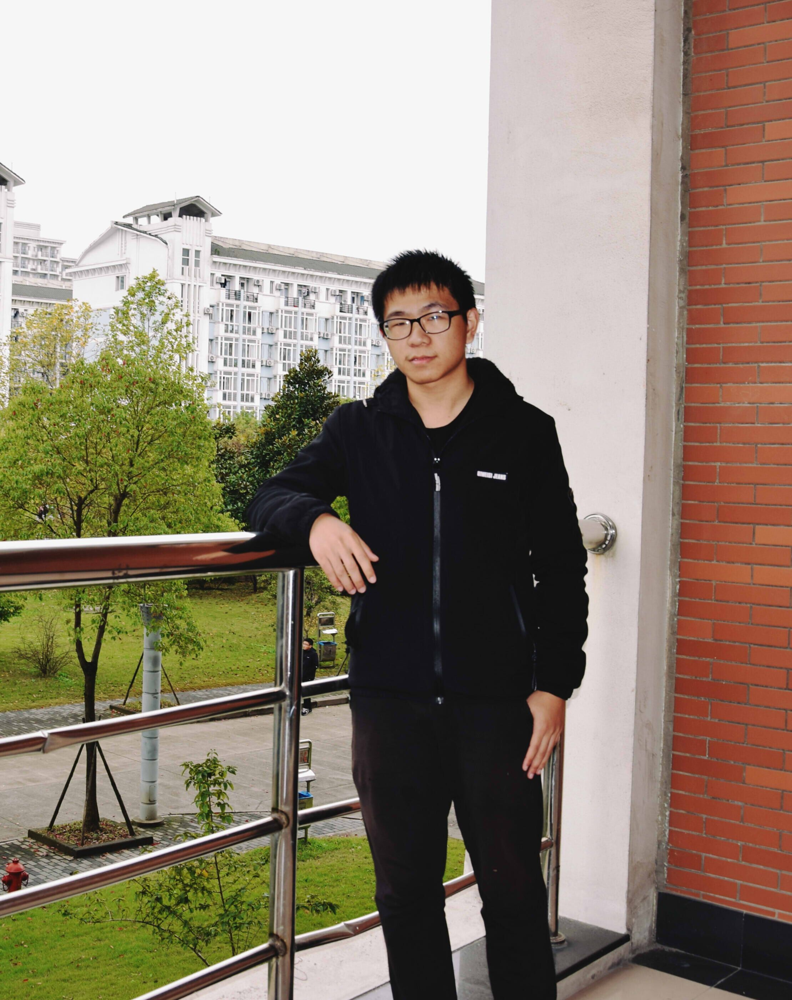
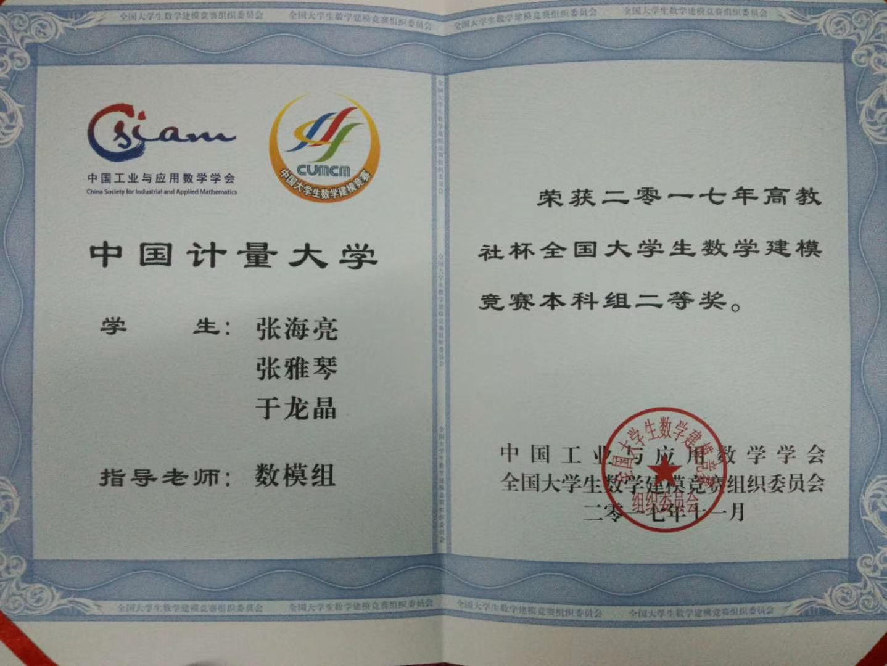
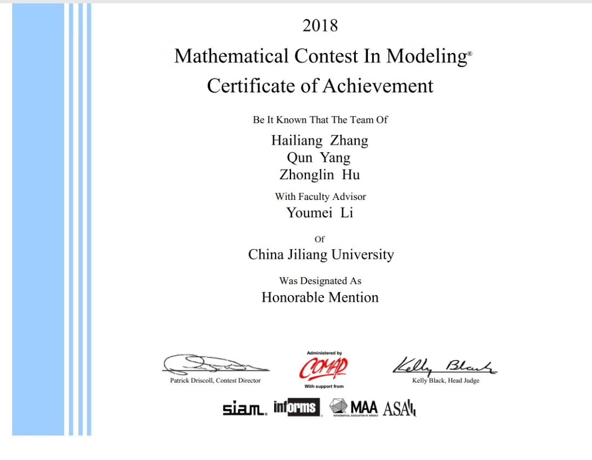

张海亮

年龄：22岁
地址：杭州下沙
电话号码：13666864357
邮箱：1741095933@qq.com
教育背景：2015.09 - 2019.06 中国计量大学 数学与应用数学 本科
2016.06 C++项目——打怪游戏 项目负责人
通过键盘的上下左右按钮来实现游戏人物的移动，设置多重关卡，并与怪物进行打斗，
来获得经验值，提高自身属性值，游戏通过即为胜利
2017.12 学校学籍管理系统 项目主要编程人
1.实现了学校信息、班级、院系、专业的管理
2.实现了课程、学生成绩的管理
3.实现学生的奖惩信息管理
4.创建视图查询学生的各项信息
5.创建触发器当增删改学生班级信息是自动修改相应班级人数
获得2次三等奖学金，2次二等奖学金，1次创新奖学金，1次三好学生荣誉称号，
最高绩点达到4.22/5
2018年浙江省大学生高等数学竞赛数学类三等奖
2018年美国大学生数学建模竞赛国际二等奖
2017年全国大学生数学建模竞赛全国二等奖
2017年数学建模五一联赛二等奖


语言技能：通过英语四六级
专业技能：熟悉Java语言开发，做过小项目
理解C语言的原理，掌握数据库技术的基本知识
熟悉使用MATLAB软件编程进行科学计算，以及利用SPSS软件进行数据分析
了解C++，Python，R等高级语言，做过ACM程序设计，涉猎算法知识
办公技能：熟练使用Office 办公软件
正所谓理想是黑暗中的一盏名灯，能照亮跋涉者心中的每一个角落。
而我就在计算机的道路上努力前行，我的梦想就是运用大学以及平时所学的数学知识来研究算法，
希望有朝一日能研究出有用的算法并应用于实际中，方便人们的生活。
我的兴趣爱好比较广泛，平时也会看一些算法之类的书，闲暇之余会看一些文学作品，比如 《活着》、
《追风筝的人》，
周末的时候喜欢做一些球类运动，比如打乒乓球，羽毛球等，我的偶像是乒乓球大满贯马龙。
1.本人在大学就读的是数学专业，数学基础较好，并且具有吃苦耐劳的品质，对于程序员相关工作有天然优势
2.学习过多种计算机高级语言，有一定的算法基础和数据分析能力
3.善于与人合作，能顺利完成项目开发
4.抗压能力强，能适应一定强度的工作